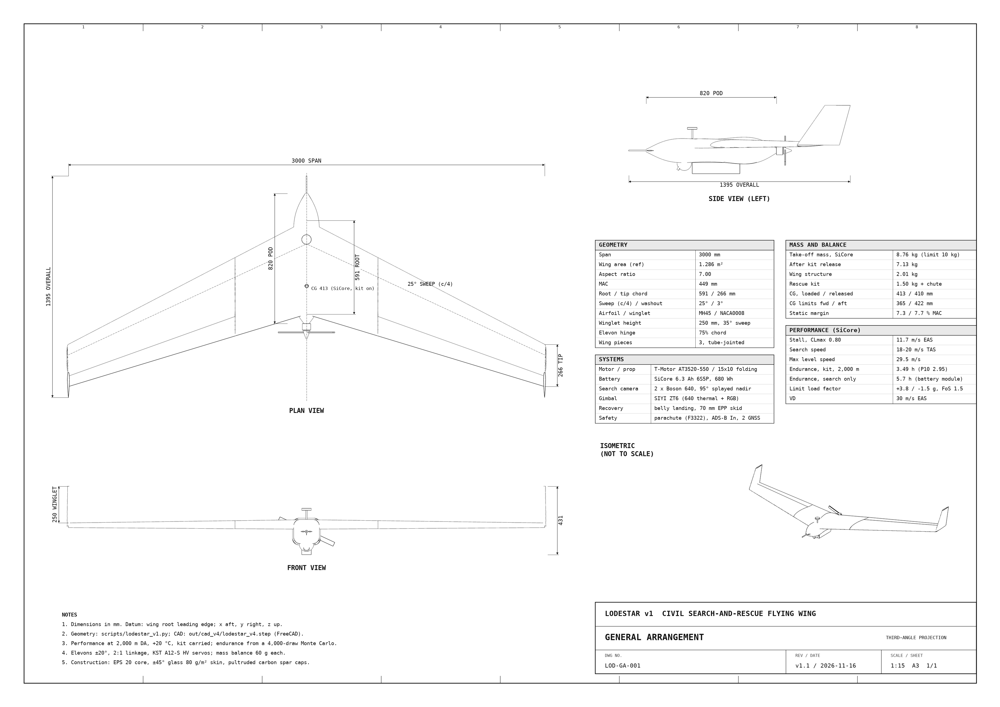
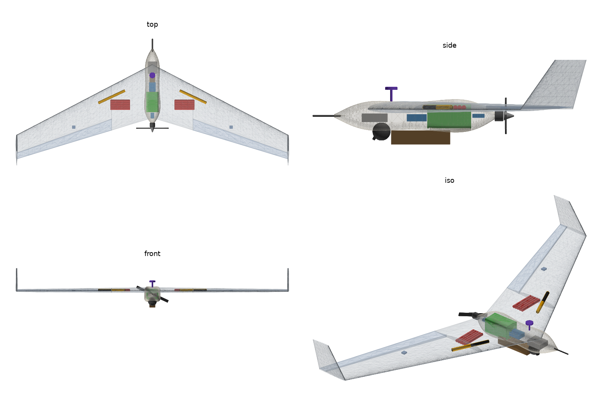

<title>Lodestar v1 design report</title>
<link rel="preconnect" href="https://fonts.googleapis.com">
<link rel="stylesheet" href="https://fonts.googleapis.com/css2?family=Barlow+Condensed:wght@500;600;700&family=Public+Sans:ital,wght@0,400;0,600;0,700;1,400&family=IBM+Plex+Mono:wght@400;500&display=swap">
<style>
/* Layout: one reading column (~68ch) with wider figure bands; an engraved "data plate" as the opening spec block. */
:root {
  --paper: #f3f5f6;
  --plate: #ffffff;
  --ink: #15212b;
  --muted: #56636e;
  --rule: #d3dadf;
  --orange: #c84a17;      /* search-and-rescue orange: marks, bars, kit */
  --orange-soft: #f6d9cc;
  --steel: #2b6890;       /* the fielded-drone comparison */
  --steel-soft: #d6e4ee;
  --display: "Barlow Condensed", "Arial Narrow", "Roboto Condensed", sans-serif;
  --body: "Public Sans", "Segoe UI", system-ui, sans-serif;
  --mono: "IBM Plex Mono", ui-monospace, "Cascadia Mono", Consolas, monospace;
}
@media (prefers-color-scheme: dark) {
  :root:not([data-theme="light"]) {
    --paper: #0f161b; --plate: #172129; --ink: #e5ecf0; --muted: #9aa7b1; --rule: #2a3640;
    --orange: #f07a45; --orange-soft: #4a2617; --steel: #74abd1; --steel-soft: #1d3444; color-scheme: dark;
  }
}
:root[data-theme="dark"] {
  --paper: #0f161b; --plate: #172129; --ink: #e5ecf0; --muted: #9aa7b1; --rule: #2a3640;
  --orange: #f07a45; --orange-soft: #4a2617; --steel: #74abd1; --steel-soft: #1d3444; color-scheme: dark;
}
* { box-sizing: border-box; }
body {
  background: var(--paper); color: var(--ink); font-family: var(--body); font-size: 17px; line-height: 1.6;
  padding-left: max(16px, env(safe-area-inset-left, 0px)); padding-right: max(16px, env(safe-area-inset-right, 0px));
}
main { max-width: 1080px; margin: 0 auto; padding-block: 40px 64px; display: grid; gap: 56px; }
section { display: grid; gap: 18px; }
.col { max-width: 68ch; }
h1, h2, h3 { font-family: var(--display); font-weight: 700; line-height: 1.05; text-wrap: balance; margin: 0; }
h1 { font-size: clamp(56px, 11vw, 104px); letter-spacing: 0.01em; text-transform: uppercase; }
h2 { font-size: clamp(30px, 5vw, 40px); text-transform: uppercase; letter-spacing: 0.02em; }
h3 { font-size: 22px; letter-spacing: 0.02em; }
p { margin: 0; }
.eyebrow { font-family: var(--mono); font-size: 13px; letter-spacing: 0.12em; text-transform: uppercase; color: var(--muted); }
.lede { font-size: clamp(19px, 2.4vw, 22px); line-height: 1.5; max-width: 52ch; }
a { color: var(--steel); text-underline-offset: 3px; }
a:focus-visible { outline: 2px solid var(--orange); outline-offset: 2px; }
strong { font-weight: 700; }

/* Hero */
.hero { display: grid; gap: 22px; }
.hero figure { margin: 0; border-radius: 6px; overflow: hidden; background: #e9ebed; }
.hero img { display: block; width: 100%; height: auto; }

/* Data plate: the aircraft's identity plate */
.plate {
  font-family: var(--mono); background: var(--plate); border: 1.5px solid var(--ink); border-radius: 4px;
  padding: 18px 20px; display: grid; gap: 14px; max-width: 760px;
}
.plate-head { display: flex; justify-content: space-between; gap: 12px; flex-wrap: wrap; font-size: 12px; letter-spacing: 0.14em; text-transform: uppercase; color: var(--muted); border-bottom: 1px solid var(--rule); padding-bottom: 10px; }
.plate dl { display: grid; grid-template-columns: repeat(auto-fit, minmax(128px, 1fr)); gap: 14px 18px; margin: 0; }
.plate dt { font-size: 11px; letter-spacing: 0.14em; text-transform: uppercase; color: var(--muted); }
.plate dd { margin: 2px 0 0; font-size: 20px; font-weight: 500; font-variant-numeric: tabular-nums; }
.plate dd small { font-size: 12px; color: var(--muted); font-weight: 400; }

/* The answer */
.answer { border-left: 4px solid var(--orange); padding: 4px 0 4px 20px; display: grid; gap: 12px; }
.answer p { font-size: clamp(19px, 2.4vw, 22px); line-height: 1.45; max-width: 56ch; }

/* Bar chart drawn in HTML so it follows the theme */
.bars { display: grid; gap: 10px; max-width: 760px; }
.bar { display: grid; grid-template-columns: minmax(130px, 220px) 1fr; gap: 12px; align-items: center; }
.bar .name { font-size: 15px; line-height: 1.25; }
.bar .name small { display: block; color: var(--muted); font-size: 13px; }
.track { position: relative; height: 26px; background: transparent; border-left: 1px solid var(--rule); }
.fill { height: 100%; border-radius: 0 4px 4px 0; background: var(--steel); display: flex; align-items: center; }
.fill.lodestar { background: var(--orange); }
.val { position: absolute; top: 50%; transform: translateY(-50%); font-family: var(--mono); font-size: 14px; font-variant-numeric: tabular-nums; padding-left: 8px; }
.axisnote { font-size: 14px; color: var(--muted); max-width: 68ch; }

/* Figures */
figure { margin: 0; display: grid; gap: 8px; }
figcaption { font-size: 14px; color: var(--muted); max-width: 72ch; }
.chart { background: #fcfcfb; border-radius: 6px; padding: 10px; border: 1px solid var(--rule); }
.chart img { display: block; width: 100%; height: auto; }
.gallery { display: grid; grid-template-columns: repeat(2, minmax(0, 1fr)); gap: 18px; }
.gallery figure img { display: block; width: 100%; height: auto; border-radius: 6px; background: #e9ebed; }
.gallery .wide { grid-column: 1 / -1; }

/* Tables */
.tablewrap { overflow-x: auto; max-width: 100%; }
table { border-collapse: collapse; font-size: 15px; min-width: 520px; }
th, td { text-align: left; padding: 8px 14px 8px 0; border-bottom: 1px solid var(--rule); vertical-align: top; }
th { font-family: var(--mono); font-size: 12px; letter-spacing: 0.1em; text-transform: uppercase; color: var(--muted); font-weight: 500; }
td.num, th.num { text-align: right; font-variant-numeric: tabular-nums; font-family: var(--mono); font-size: 14px; }
tr.pick td { font-weight: 700; }
tr.pick td:first-child { box-shadow: inset 3px 0 0 var(--orange); padding-left: 10px; }

/* Lists */
ul.clean { margin: 0; padding-left: 1.1em; display: grid; gap: 8px; max-width: 68ch; }
ol.log { list-style: none; margin: 0; padding: 0; display: grid; gap: 0; max-width: 820px; }
ol.log li { display: grid; grid-template-columns: 64px 1fr; gap: 16px; padding: 12px 0; border-top: 1px solid var(--rule); }
ol.log .m { font-family: var(--mono); font-size: 13px; color: var(--orange); padding-top: 3px; letter-spacing: 0.06em; }
ol.log h3 { font-size: 19px; margin-bottom: 2px; }
ol.log p { font-size: 15.5px; color: var(--ink); }

.rules { display: grid; grid-template-columns: repeat(auto-fit, minmax(230px, 1fr)); gap: 14px; }
.rule { background: var(--plate); border: 1px solid var(--rule); border-radius: 6px; padding: 14px 16px; display: grid; gap: 4px; align-content: start; }
.rule b { font-family: var(--display); font-size: 21px; font-weight: 600; letter-spacing: 0.02em; }
.rule span { font-size: 15px; color: var(--muted); }

footer { border-top: 1px solid var(--rule); padding-top: 16px; font-size: 14px; color: var(--muted); display: grid; gap: 6px; }

@media (max-width: 640px) {
  body { font-size: 16px; }
  .gallery { grid-template-columns: minmax(0, 1fr); }
  .bar { grid-template-columns: 1fr; gap: 4px; }
  ol.log li { grid-template-columns: 48px 1fr; gap: 10px; }
}
@media (prefers-reduced-motion: no-preference) {
  .fill { transition: width 0.6s ease-out; }
}
</style>
<main>
  <header class="hero">
    <div class="eyebrow">Civil search-and-rescue aircraft · design revision v1.1 · 16 November 2026</div>
    <h1>Lodestar v1</h1>
    <p class="lede">A 3-metre flying wing that searches mountain trails for a lost hiker with a twin thermal camera for three and a half hours. When it finds them, it drops a 1.5 kg survival kit with a radio, water and a foil blanket by parachute.</p>
    <figure>
      
    </figure>
    <div class="plate" aria-label="Specification plate">
      <div class="plate-head"><span>Lodestar v1 · revision v1.1</span><span>SiCore cells · foam-core wing</span></div>
      <dl>
        <div><dt>Span</dt><dd>3.0 m <small>3 pieces</small></dd></div>
        <div><dt>Take-off mass</dt><dd>8.76 kg <small>limit 10 kg</small></dd></div>
        <div><dt>Endurance</dt><dd>3.49 h <small>2,000 m, kit aboard</small></dd></div>
        <div><dt>Search speed</dt><dd>18–20 m/s</dd></div>
        <div><dt>Stall</dt><dd>11.7 m/s <small>EAS</small></dd></div>
        <div><dt>Max speed</dt><dd>29.5 m/s</dd></div>
        <div><dt>Camera</dt><dd>2 × 640 px <small>95° thermal</small></dd></div>
        <div><dt>Kit</dt><dd>1.5 kg <small>by parachute</small></dd></div>
      </dl>
    </div>
  </header>

  <section>
    <div class="eyebrow">The answer</div>
    <div class="answer">
      <p>Across 3,500 simulated lost-hiker searches on seven real US trail areas, Lodestar gets help to the person within 3 hours in <strong>18%</strong> of them at the nominal detection calibration. The best fixed-wing search drone gets <strong>15%</strong>.</p>
      <p>Within the first hour the gap is wider: <strong>11.6%</strong> against <strong>7.3%</strong>, because the kit makes contact without waiting for a ground team to walk in.</p>
    </div>
    <p class="col">Lodestar leads every aircraft in the comparison at all three detection calibrations, on both trail patterns, at 1 hour and at 3 hours. These numbers come from a random seed that was never used to tune the design. One comparison is not clearly ahead: against the DeltaQuad Evo-LE at 3 hours, on the 6-trail pattern at the pessimistic calibration, the lead is +0.9 points with an interval from −0.1 to +1.9.</p>
  </section>

  <section>
    <h2>Help within 3 hours</h2>
    <div class="bars" role="img" aria-label="Share of lost-hiker searches where help reaches the person within 3 hours, nominal calibration">
      <div class="bar"><div class="name">Lodestar v1.1 <small>SiCore cells</small></div><div class="track"><div class="fill lodestar" style="width:71.8%"></div><span class="val" style="left:71.8%">18.0%</span></div></div>
      <div class="bar"><div class="name">Lodestar v1.1 <small>P50B cells (budget pack)</small></div><div class="track"><div class="fill lodestar" style="width:63.8%"></div><span class="val" style="left:63.8%">16.0%</span></div></div>
      <div class="bar"><div class="name">DeltaQuad Evo-LE <small>8 h (press-reported)</small></div><div class="track"><div class="fill" style="width:59.7%"></div><span class="val" style="left:59.7%">14.9%</span></div></div>
      <div class="bar"><div class="name">DeltaQuad Evo GOV <small>4.25 h, VTOL</small></div><div class="track"><div class="fill" style="width:53.3%"></div><span class="val" style="left:53.3%">13.3%</span></div></div>
      <div class="bar"><div class="name">C-Astral Bramor ppX <small>3.5 h</small></div><div class="track"><div class="fill" style="width:49.3%"></div><span class="val" style="left:49.3%">12.3%</span></div></div>
      <div class="bar"><div class="name">Quantum Trinity Pro <small>1.5 h</small></div><div class="track"><div class="fill" style="width:30.3%"></div><span class="val" style="left:30.3%">7.6%</span></div></div>
      <div class="bar"><div class="name">AgEagle eBee X <small>1.5 h</small></div><div class="track"><div class="fill" style="width:29.5%"></div><span class="val" style="left:29.5%">7.4%</span></div></div>
    </div>
    <p class="axisnote">Seed 20261115, nominal detection calibration, mean of the 3-trail and 6-trail patterns. 7 sites × 500 hikers, terrain-following routes flown at each aircraft's own speed and turn radius, ISRID lost-hiker statistics, real canopy cover. Competitors fly a single 32° thermal camera, carry no kit, and use their published endurance. Bars run from 0 to 25%.</p>
    <div class="tablewrap">
      <table>
        <thead><tr><th>Aircraft</th><th class="num">Low</th><th class="num">Nominal</th><th class="num">High</th><th class="num">Within 1 h (nominal)</th></tr></thead>
        <tbody>
          <tr class="pick"><td>Lodestar v1.1, SiCore</td><td class="num">12.9</td><td class="num">18.0</td><td class="num">22.7</td><td class="num">11.6</td></tr>
          <tr><td>Lodestar v1.1, P50B</td><td class="num">11.2</td><td class="num">16.0</td><td class="num">20.3</td><td class="num">11.3</td></tr>
          <tr><td>DeltaQuad Evo-LE (press)</td><td class="num">11.3</td><td class="num">14.9</td><td class="num">17.8</td><td class="num">7.3</td></tr>
          <tr><td>DeltaQuad Evo GOV</td><td class="num">10.3</td><td class="num">13.3</td><td class="num">16.2</td><td class="num">7.1</td></tr>
          <tr><td>C-Astral Bramor ppX</td><td class="num">9.4</td><td class="num">12.3</td><td class="num">14.9</td><td class="num">7.3</td></tr>
          <tr><td>Quantum Trinity Pro</td><td class="num">5.8</td><td class="num">7.6</td><td class="num">9.2</td><td class="num">7.1</td></tr>
          <tr><td>AgEagle eBee X</td><td class="num">5.8</td><td class="num">7.4</td><td class="num">8.8</td><td class="num">6.8</td></tr>
        </tbody>
      </table>
    </div>
    <p class="axisnote">Help within 3 h [%] at the low, nominal and high detection calibrations (thermal detection odds 0.735 / 1.5 / 3.0, canopy porosity 0.20 / 0.35 / 0.50), and help within 1 h [%] at nominal. The calibration moves every aircraft together; the ranking does not change.</p>
  </section>

  <section>
    <h2>The aircraft</h2>
    <p class="col">A tailless swept wing with winglets keeps drag low and breaks down into three pieces for a car. The 30 battery cells sit in the wing roots either side of the kit bay, which is on the balance point, so the trim barely moves when the kit drops (static margin 7.3% loaded, 7.7% released). Two FLIR Boson 640 thermal cores look straight down, splayed ±22.5° across track, for a combined 95° view. That gives a 136 m search track, 2.5 times the spacing of a single gimbal camera. A SIYI ZT6 gimbal confirms finds and aims the drop. Recovery is a belly landing on a 70 mm EPP crush skid.</p>
    <figure>
      <div class="chart"></div>
      <figcaption>Figure 1. CAD v4 (FreeCAD, built from the frozen parameter file) with translucent skins: battery packs (red), kit container (green), avionics (blue), aircraft parachute (grey, nose), gimbal ball and belly skid.</figcaption>
    </figure>
    <div class="tablewrap">
      <table>
        <thead><tr><th>Mass</th><th class="num">kg</th><th>Basis</th></tr></thead>
        <tbody>
          <tr><td>Wing structure, joints, servos</td><td class="num">2.01</td><td>spanwise sizing model, checked by FE</td></tr>
          <tr><td>Battery: 30 SiCore cells, 6S5P, 680 Wh, with heater and BMS</td><td class="num">2.60</td><td>datasheet cells + pack build</td></tr>
          <tr><td>Rescue kit + kit parachute + container</td><td class="num">1.70</td><td>weighed kit; drop study chute</td></tr>
          <tr><td>Cameras: twin Boson 640 + ZT6 gimbal</td><td class="num">0.36</td><td>datasheets + mounts</td></tr>
          <tr><td>Aircraft parachute + trigger (ASTM F3322 class)</td><td class="num">0.40</td><td>vendor class estimate</td></tr>
          <tr><td>Everything else: pod, winglets, avionics, motor, safety fit, wiring</td><td class="num">1.68</td><td>budgets and datasheets</td></tr>
          <tr class="pick"><td>Take-off mass (SiCore, kit on)</td><td class="num">8.76</td><td>9.82 kg with the growth allowance; limit 10 kg</td></tr>
        </tbody>
      </table>
    </div>
  </section>

  <section>
    <h2>Mission numbers</h2>
    <div class="tablewrap">
      <table>
        <thead><tr><th>Metric</th><th class="num">Lodestar v1.1</th><th>Best competitor</th></tr></thead>
        <tbody>
          <tr><td>Time to first contact, median / P90 (among contacted within 3 h)</td><td class="num">38 / 104 min</td><td>Evo-LE 64 / 153 min</td></tr>
          <tr><td>Area searched per sortie (calm wind)</td><td class="num">28 km²</td><td>Evo-LE 23 km²</td></tr>
          <tr><td>Endurance with kit, 2,000 m, +20 °C (P10 / P50)</td><td class="num">2.95 / 3.21 h</td><td>—</td></tr>
          <tr><td>Endurance, published style (sea level, best speed)</td><td class="num">4.2 h</td><td>Evo-LE 8 h claimed</td></tr>
          <tr><td>Search only, battery module in the kit bay</td><td class="num">6.9 h</td><td>Evo-LE 8 h claimed</td></tr>
          <tr><td>Groundspeed home into a 12 m/s wind</td><td class="num">17.5 m/s</td><td>eBee X 18.0 m/s</td></tr>
          <tr><td>Dash to a point 5 km away, still air</td><td class="num">2.8 min</td><td>eBee X 2.8 min</td></tr>
        </tbody>
      </table>
    </div>
    <p class="axisnote">Time to contact and area at the low calibration. Endurance from a 4,000-draw Monte Carlo over cell capacity and resistance, drag, propeller efficiency and avionics load. Competitor speeds and endurance are published figures.</p>
  </section>

  <section>
    <h2>What was checked</h2>
    <p class="col">Every number on this page comes from one parameter file, <code>scripts/lodestar_v1.py</code>. A freeze check confirms that each analysis and each saved result agrees with it, and a 24-script test suite runs known-answer checks on every model. The thinnest margins are listed, not hidden.</p>
    <div class="tablewrap">
      <table>
        <thead><tr><th>Discipline</th><th>Method</th><th>Result</th></tr></thead>
        <tbody>
          <tr><td>Wing structure</td><td>CalculiX shell FE: manoeuvre, gust and rolling load cases, landing, mesh convergence</td><td>every design margin ≥ 0; lowest +0.27 (upper-skin wrinkling on EPS, needs a coupon test)</td></tr>
          <tr><td>Flutter</td><td>p-k with FE modes and AVL lift slopes; joint, hinge and free-play sweeps</td><td>lowest 43.6 m/s EAS at the minimum joint stiffness, against a 34.5 m/s screen (1.15 VD)</td></tr>
          <tr><td>Stability and control</td><td>AVL with pod and winglets; hinge moments, roll, lateral modes</td><td>CG envelope 365–422 mm; CG at 413 mm; all lateral modes Level 1</td></tr>
          <tr><td>Flight dynamics</td><td>JSBSim 6-DOF: trim, Dryden turbulence, kit release, motor-out, bungee launch, belly landing</td><td>drop run-in 18–20 m/s; landing design sink 2.0 m/s; launch rules above 3,000 m DA</td></tr>
          <tr><td>Propulsion and battery</td><td>UIUC propeller data, motor and cell models, 4,400 m and −10 °C to +40 °C corners</td><td>worst-corner climb 3.09 m/s and 15.3% banked gradient with the high-altitude charge rule</td></tr>
          <tr><td>System safety</td><td>hazard assessment, component FMEA, glide reach, link budget on 7 sites</td><td>aircraft parachute, backup supply, ADS-B In, dual GNSS fitted; autonomous search on link loss</td></tr>
          <tr><td>Mass</td><td>line list with maturity classes and growth allowance (AIAA S-120A style)</td><td>9.82 kg predicted against 10 kg: 0.18 kg margin</td></tr>
        </tbody>
      </table>
    </div>
  </section>

  <section>
    <h2>Cost</h2>
    <p class="col">Parts and materials are about <strong>$16,900</strong> per aircraft, and the unit cost for a 10-aircraft build including labour is about <strong>$19,000</strong>. Two Boson 640 cores are $8,900 of that. At $61 per flight hour with a volunteer crew, each expected person helped within 3 hours costs <strong>$810–$1,420</strong>, the lowest in the comparison (Trinity Pro $1,060–$1,680; eBee VISION $3,100–$4,700). The original $8,000 parts target was set aside in favour of performance; a cost-down pass on the cameras is planned.</p>
  </section>

  <section>
    <h2>Operating rules</h2>
    <div class="rules">
      <div class="rule"><b>Search at 18–20 m/s</b><span>20 m/s above 3,200 m density altitude, where 30° turns at 18 m/s lose the 1.25 Vs margin.</span></div>
      <div class="rule"><b>Drop run-in 18–20 m/s</b><span>18 m/s in calm or light turbulence, 20 m/s in moderate. Release at 40 m above ground.</span></div>
      <div class="rule"><b>Keep charge for climbs</b><span>No full-power climb below 25% charge, or below 35% above 3,000 m density altitude.</span></div>
      <div class="rule"><b>Warm packs</b><span>Packs held at 15 °C or more by insulation and a 5 W heater, with a 50 °C cut-out.</span></div>
      <div class="rule"><b>Launch</b><span>Full power at release above 3,000 m density altitude, or release at 16.5 m/s or faster.</span></div>
      <div class="rule"><b>Bingo</b><span>Head home when usable energy less the 10% reserve falls to 1.2 × the return energy into the wind + 3 m/s. Computed on board.</span></div>
    </div>
  </section>

  <section>
    <h2>Not proven yet</h2>
    <ul class="clean">
      <li><strong>Detection is the largest uncertainty.</strong> Absolute help rates move by a factor of 1.6 across the calibration range; field trials with the real camera would pin it down.</li>
      <li><strong>Competitors are modelled from spec sheets.</strong> No mass or drag model is published for them; an 80%-endurance case is reported and Lodestar's lead grows in it.</li>
      <li><strong>Assumed allowables.</strong> Skin wrinkling on EPS, the joint stiffness and the SiCore cell resistance all need coupon or bench tests before flight.</li>
      <li><strong>Thin margins.</strong> 0.18 kg to the 10 kg limit; 2.97 h at a fixed 20 m/s (3.49 h at best speed); the parachute's packed size is a vendor-class estimate.</li>
      <li><strong>Not built.</strong> This is a virtual design study with free tools and public data. Certification, insurance and the waivers for flight over people and beyond line of sight are not costed.</li>
    </ul>
  </section>

  <footer>
    <span>Design report, revision v1.1, 16 November 2026 (US Central). Full results: research/2026-11-16-step2-results.md; drawing LOD-GA-001; parts list docs/parts_list.md.</span>
    <span>Tools: FreeCAD and CalculiX, AVL, OpenVSP, AeroSandbox and NeuralFoil, JSBSim, PyVista, the UIUC Propeller Data Site, AWS terrain tiles, OpenStreetMap and NLCD canopy data.</span>
  </footer>
</main>
